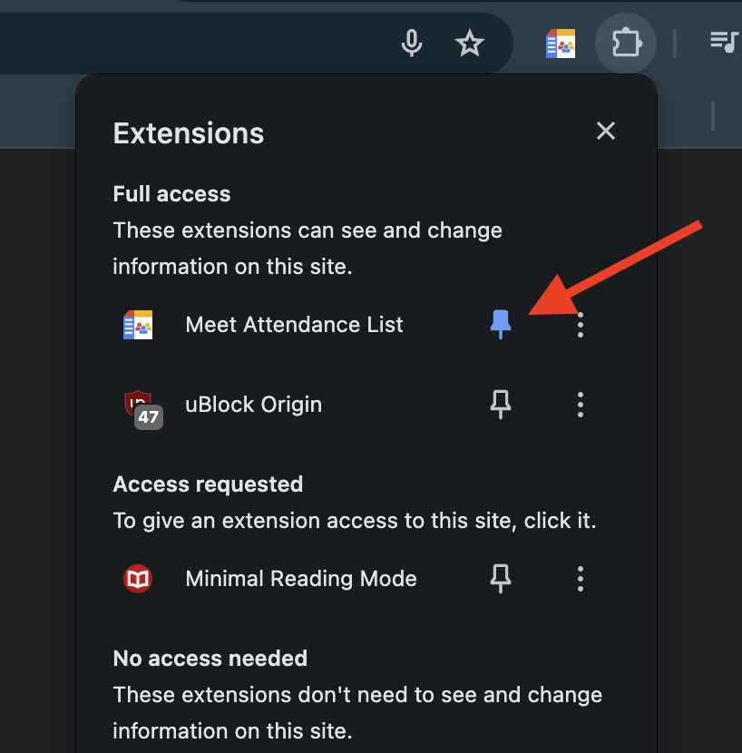
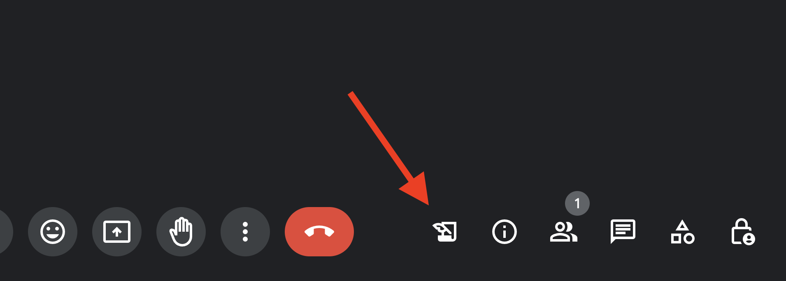
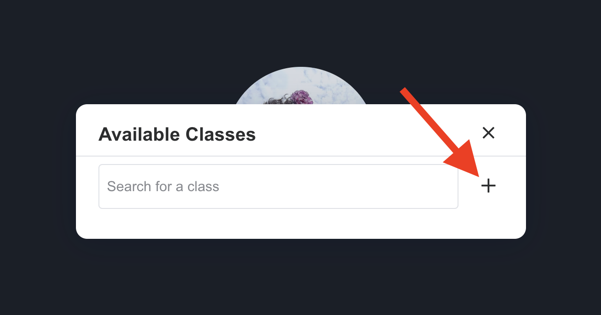
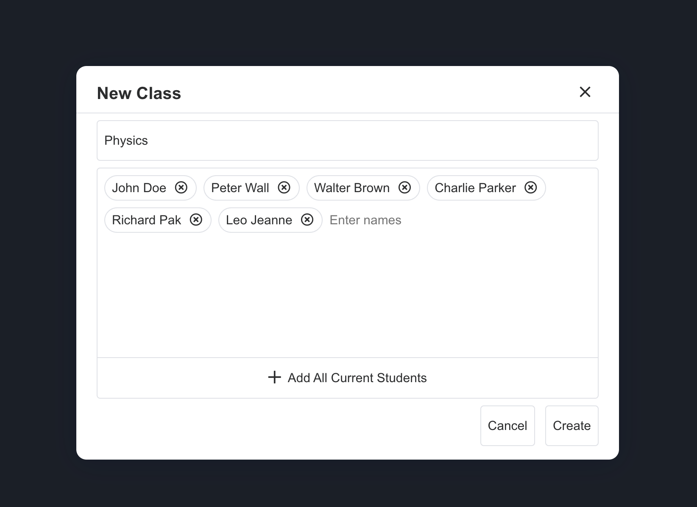
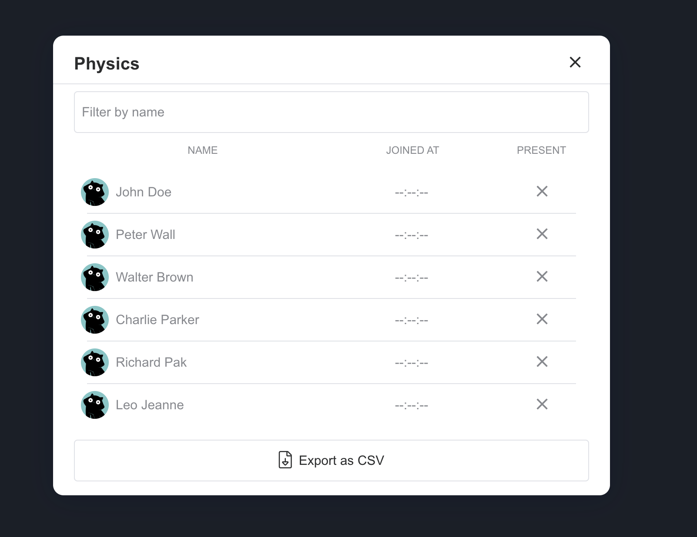
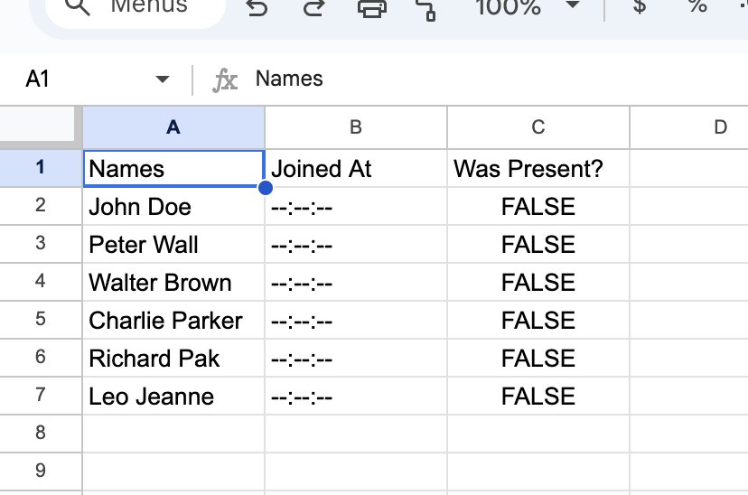

Google Meet Attendance List
Before using this app, we recommend you pin the extension's action button to your toolbar in order to easily work with it.
Description
A Google Chrome extension that saves the list of people present in a Google Meet call at a particular time.
Features
- Have multiple classes, each with its own attendance list
- Create / Edit / Delete classes
- Export attendance as CSV file
- Modern UI, easy to use
How to use
After installing the extension, open a Google Meet call. A new button will appear in the toolbar. Click on it to open the extension's popup.
To take attendance, first create a class, by clicking on the "Create new class" button.
A new window will appear, where you can enter the class name and the list of students. After that, click on the "Create" button.
To see attendance, click any class from the list of classes. The attendance list will appear.
To export attendance, click on the "Export" button. A CSV file will be downloaded to your computer.
That's it! You have successfully used the Google Meet Attendance List. If you have any questions or suggestions, please contact us at the email provided below.
Support us!
If you like this extension, consider supporting us by leaving a good review on the chrome web stores!
✨ Thank you! ✨